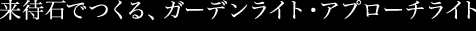
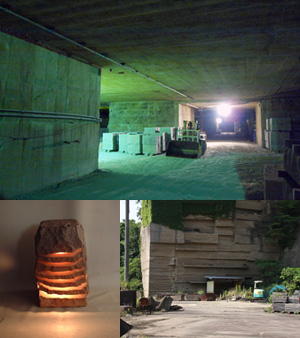
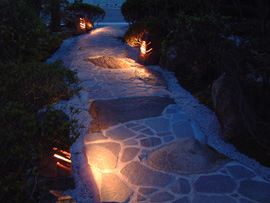
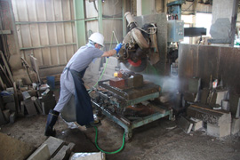
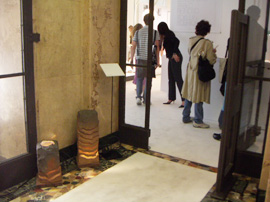
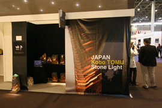

松江で産出される世界でも極めて珍しい焼成加工ができる石がある。島根県松江市宍道町来待地区で採掘される「来待石」。
これは紀元前1400万年前に堆積した凝灰質砂岩で、太古ザメの歯などの化石が含まれている地層の岩石です。
この来待石の特性を活かして、何トンもある石を適当な大きさまでに割り、中をくり抜き焼き上げた後、灯りとを組み合わせてつくる来待石のストーンライト。
その表情は「太古の昔に洞窟で火を囲んでいるよう」「オレンジ色のその光は、静かな温かさをもたらしてくれる」「石が微笑んでいる」というように形容される。

1200度という高温で焼くことによって出来た石の色が心癒される新しい光を創り出す。
庭やアプローチ、玄関など屋外に置くと、雨に濡れれば光も濃く見え、時を経れば石肌も苔むす。
葉っぱの裏側からライトアップしたり、変化を付けることで漏れ出す灯りは永久に続く命の輝きのように感じる。
ストーンライトの灯りを見つめていたら、いつしか、心が柔らかくなった。
工房陶夢 吉川彰英

吉川作業風景

2006 ミラノサローネ展示

2007 パリ・メゾンオブジェ出展
| 1987 | ボストン大学の講師であった福間敏先生に師事 |
| 1990 | 松江市殿町にて開窯 |
| 1992 | ギャラリー松緑個展 |
| 1993 | シャンブレ個展 |
| 1994 | 花久個展 |
| 1996 | 大阪南港 全国100人の陶芸家展 |
| 1998 | リズム時計本社個展 |
| 1999 | 新宿高島屋ハンズ個展 東急ハンズ横浜店展示 米子高島屋個展 |
| 2001 | 島根県立美術館個展 |
| 2002 | 島根県立美術館個展 広島ナイト美術展 大賞 南風の風コンペ グランプリ |
| 2003 | BONSAIの器展 入選 一畑ギャラリー個展 島根県立美術館個展 |
| 2004 | 銀座小野画廊個展 銀座松屋デパート個展 |
| 2006 | イタリア・サローネ展示 |
| 2007 | パリ・メゾンオブジェ出展 |
| 2008 | 新高輪プリンスホテルギャラリー一稲穂堂個展 ギリシャ・エルミラ社へ輸出 |
| 2009 | パリ・メゾンオブジェ出展 |
窯元・工房 陶夢
島根県松江市殿町201
電話：(0852)61ｰ1788
FAX：(0852)26-3226
島根県松江市殿町201
電話：(0852)61ｰ1788
FAX：(0852)26-3226